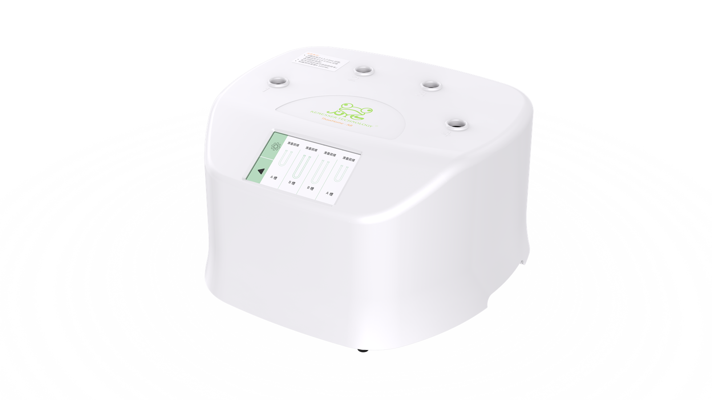

无水化复苏
无水化自动解冻复苏，只需将样本放入仪器对应槽口中，减少了污染风险。全程自动化复苏，避免操作误差。

FUNCTIONS
无水化自动解冻复苏，只需将样本放入仪器对应槽口中，减少了污染风险。全程自动化复苏，避免操作误差。
四通道独立槽口工作，可以同时复苏四支不同的样本，一台更比四台强。
显示屏四通道独立显示，可实时观察样本复苏状态。
实时报警功能，通过数据管控和报警，减少因人为误操作而影响细胞成活率的行为。
四通道独立槽口工作，可以同时复苏四支不同的样本，一台更比四台强；全程自动化复苏，避免操作误差。